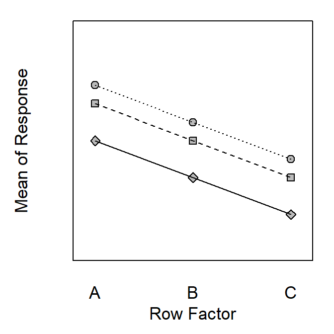
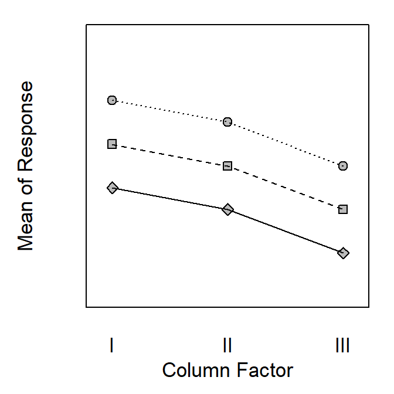
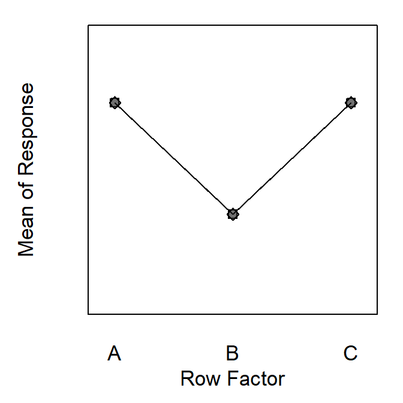
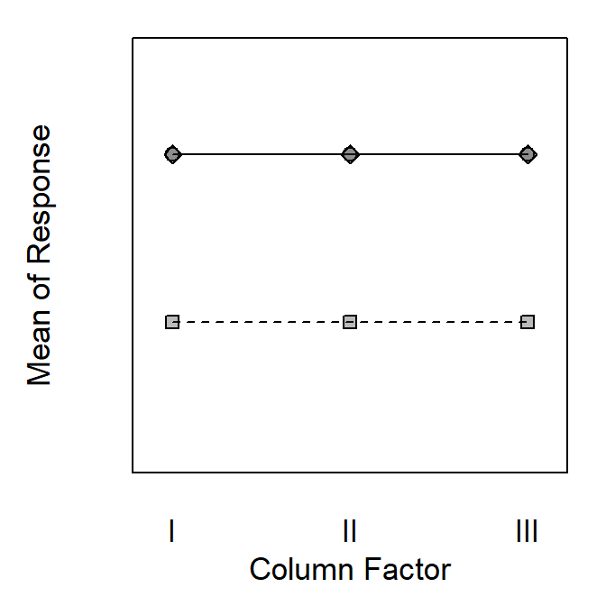
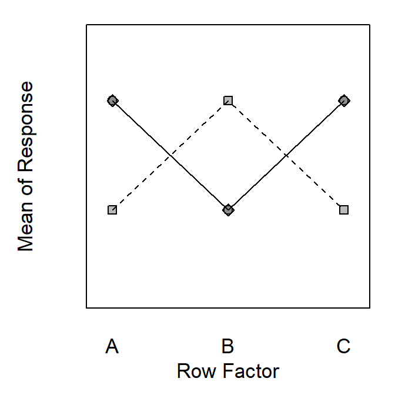
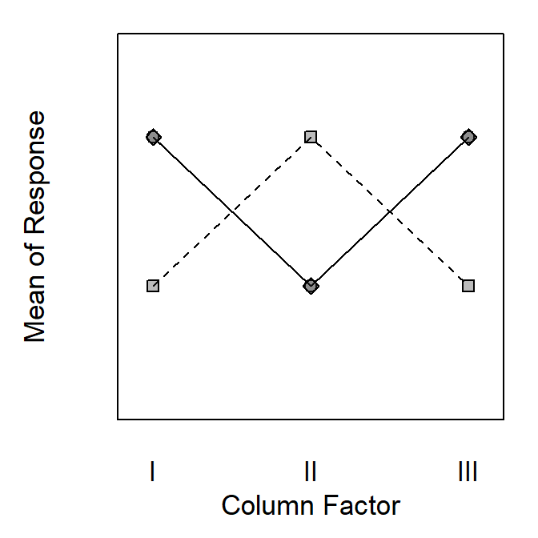

Note Your answers to the questions below should follow the expectations for homework found here. Due date is on the Dates page.
For each horizontal pair of graphs below determine which effects (i.e., row factor main, column factor main, or interaction effect) are illustrated. Provide a short explanation for each of your answers (i.e., how did you come to your conclusions).
Note For each horizontal pair of graphs there are three levels of each factor – some levels may appear to be missing because they overlap with other levels. Make sure to make an explicit statement of an effect or no effect for each main and the interaction effect.


